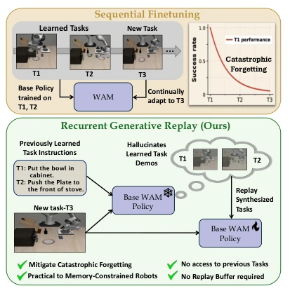
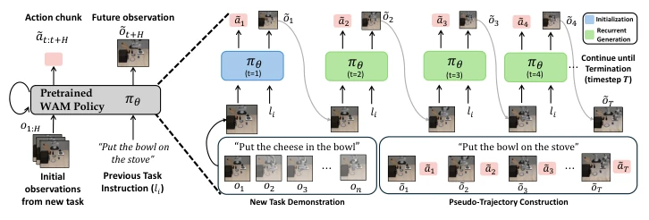
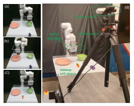
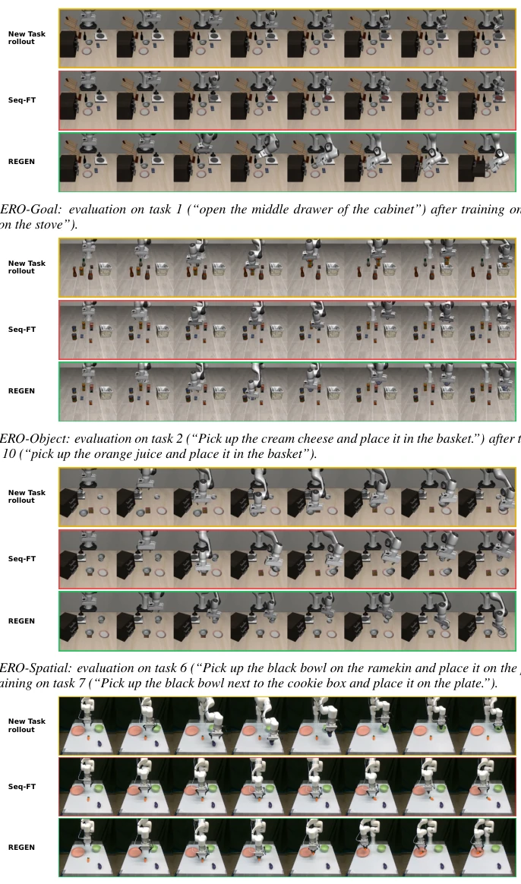
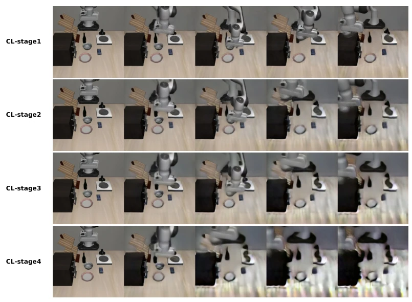
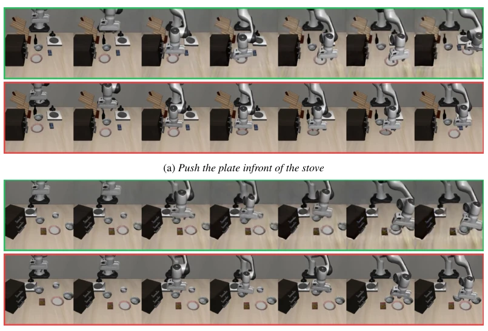

This paper equips robots with the capability of "memory hallucination". The authors leverage the generative properties of World Action Models (WAM) to mitigate catastrophic forgetting by "filling in the blanks" of past task trajectories without storing real historical data. This approach is quite clever, saving memory and avoiding privacy issues, but essentially it is "drawing a cake to satisfy hunger". Although experiments show the forgetting rate is reduced by 50%, approaching the effect of real replay, the generated videos become blurrier the further back they go, and actions and visuals do not fully align. Simply put, it is letting the model deceive itself to review; although better than forgetting everything directly, it is still far from true "photographic memory". However, using WAM as a replay buffer does open a new path for lifelong learning in embodied intelligence, worth praising but do not overhype it.
Robot lifelong learning faces two major challenges: one is catastrophic forgetting, and the other is replay data privacy and storage costs. Existing methods such as Experience Replay (ER) rely on storing real demonstrations [13], which is becoming increasingly unrealistic in the era of modern pre-trained models, as private datasets are often not public. Regularization methods (such as EWC [21]) or parameter isolation (such as PackNet [24]) can alleviate forgetting, but cannot provide rich context like replay. Vision-Language-Action (VLA) models [11, 12] have certain anti-forgetting capabilities, but are not completely immune. World Action Models (WAM) [1, 2] can predict future observations and theoretically possess the ability to generate memories. This paper aims to solve the problem of "continual learning without real replay data", utilizing WAM's generation interface to replace traditional replay buffers, achieving continual imitation learning without storing historical demonstrations.

Figure 1: Overview of REGEN. Sequential fine- tuning of WAMs leads to catastrophic forgetting (top). REGEN leverages the WAM’s generative capabilities to hallucinate pseudo-demonstrations of previously learned tasks, replaying them along- side new task data to mitigate forgetting without storing any prior-task demonstrations. (bottom).
The REGEN framework comprises three stages. First is initialization, utilizing a real observation from the current task as a seed, combined with old task instructions to initiate generation. Next is the recursive generation stage, where the model no longer relies on real observations, but feeds its own generated future observations back to the input, recursively predicting subsequent actions and frames until the maximum step count is reached or the task reward head determines completion. Finally is pseudo-trajectory construction, pairing generated actions and observations to form pseudo-demonstrations, mixed with current task data for behavior cloning training. The core innovation lies in utilizing WAM's joint action-observation prediction capability to construct an "internal replay" mechanism that requires no external storage. In this way, when adapting to new tasks, the model can "revisit" the structure of old tasks, thereby retaining old skills. The training objective is to minimize the behavior cloning loss on the mixed dataset, ensuring consistency between old and new task distributions. Specific termination conditions are based on reward prediction; stop when rewards are high for three consecutive steps and at least one step is full score, to avoid contamination by low-quality frames.

Figure 2: Overview of the pseudo-trajectory generation process. Left: unrolled view of the RE- GEN. Right: REGEN rolls out πθ recurrently to construct a pseudo-trajectory for a previous task. The policy is seeded with new-task observations and the previous task’s instruction ℓi (initialization, blue), then each generated observation is fed back to produce the next (˜ot, ˜at) pair (recurrent gener- ation, green) until timestep T. For simplicity, we illustrate the process with H = 1.
Tested on LIBERO simulation and xArm7 real robot. Comparison baselines include sequential fine-tuning, LoRA, EWC, and real Experience Replay (ER). Metrics cover Forward Transfer (FWT), Negative Backward Transfer (NBT), and Area Under Curve (AUC). Results show that REGEN reduces the forgetting rate by approximately 50% compared to sequential fine-tuning, AUC is significantly better than non-replay baselines, approaching ER performance. Ablation studies indicate that increasing replay quantity can further reduce forgetting. However, analysis reveals the bottleneck lies in the decline of visual quality in long-horizon generation (PSNR drop) and inconsistency between predicted observations and executed actions (imagination success but execution failure). Real robot experiments also validate the effectiveness of the method, although there is still room for improvement in complex scenes.

Figure 3: Real-world setting. a), b), c) illustrate tasks T1, T2, and T3, respectively. d) Our real- robot setup consists of an xArm7 manipulator, a wrist-mounted gripper camera, and a third-person RGB-D camera.

Figure 7: Qualitative comparison on previously seen tasks after continual learning. In (a)-(d), Top:current CL-stage task rollout. Middle: Seq-FT rollout on the previous task, demonstrating catastrophic forgetting by executing the current task instead or failing to accomplish the previous task. Bottom: REGEN successful rollouts on the previous task, retaining task-relevant behavior.

Figure 8: Degradation of pseudo-trajectory visual observation quality across CL stages. Gen- erated trajectories for the task “put the bowl on top of the cabinet” show progressively increasing blur.
其他图片Other Figures

Figure 9: Inconsistency between predicted observations and actions. Top row: future observa- tions imagined by the WAM, which appear to successfully complete the task. Bottom row: execut- ing the predicted actions in the simulator fails to represent the imagined future observation, revealing that the WAM generates visually plausible outcomes without ensuring that the corresponding actions are physically sufficient.